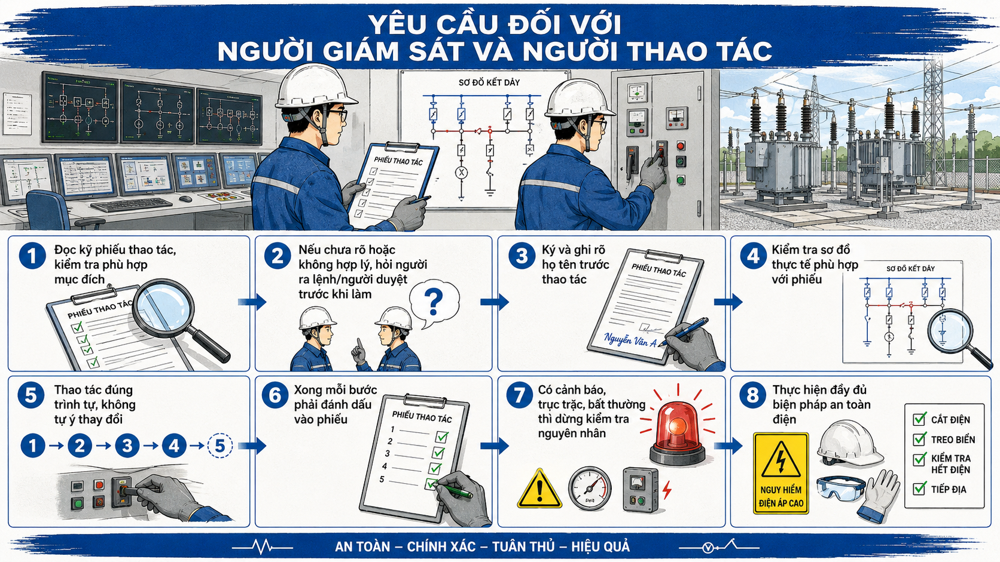

← Quay lại danh mục câu hỏi
CÂU HỎI 38
Câu 38: Yêu cầu đối với người giám sát, người thao tác

Hình 38: Sơ đồ minh họa (nếu có)
Trả lời:
Khi thực hiện phiếu thao tác, người giám sát, người thao tác phải thực hiện các nội dung sau:
- Đọc kỹ phiếu thao tác và kiểm tra phiếu thao tác phải phù hợp với mục đích thao tác.
- Khi thấy có điều không hợp lý hoặc không rõ ràng trong phiếu thao tác cần đề nghị người ra lệnh thao tác hoặc người duyệt phiếu giải thích và chỉ được thực hiện thao tác khi đã hiểu rõ các bước thao tác.
- Phải ký và ghi rõ họ tên vào phiếu thao tác trước khi thao tác.
- Trước khi tiến hành thao tác phải kiểm tra sự tương ứng, phù hợp của sơ đồ kết dây thực tế với sơ đồ trong phiếu thao tác.
- Phải thực hiện tất cả các thao tác đúng theo trình tự trong phiếu thao tác. Không được tự ý thay đổi trình tự khi chưa được phép của người ra lệnh thao tác.
- Khi thực hiện xong mỗi bước thao tác, phải đánh dấu từng thao tác vào phiếu để tránh nhầm lẫn và thiếu sót các hạng mục.
- Trong quá trình thao tác nếu có xuất hiện cảnh báo hoặc có những trục trặc về thiết bị và những hiện tượng bất thường, phải ngừng thao tác để kiểm tra và tìm nguyên nhân trước khi thực hiện các thao tác tiếp theo.
- Phải thực hiện các biện pháp an toàn theo quy định về kỹ thuật an toàn điện.